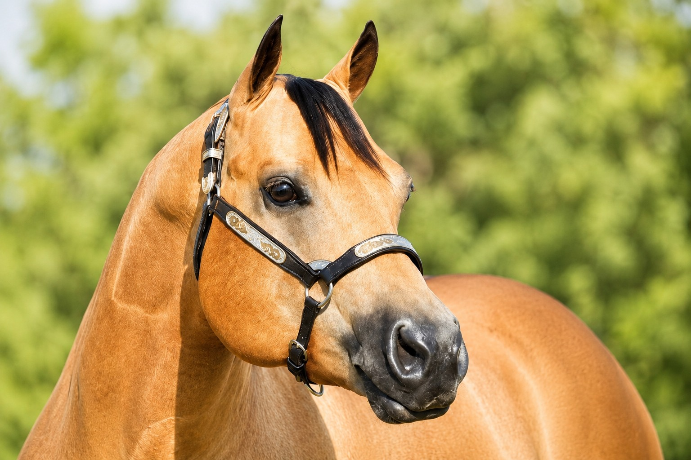
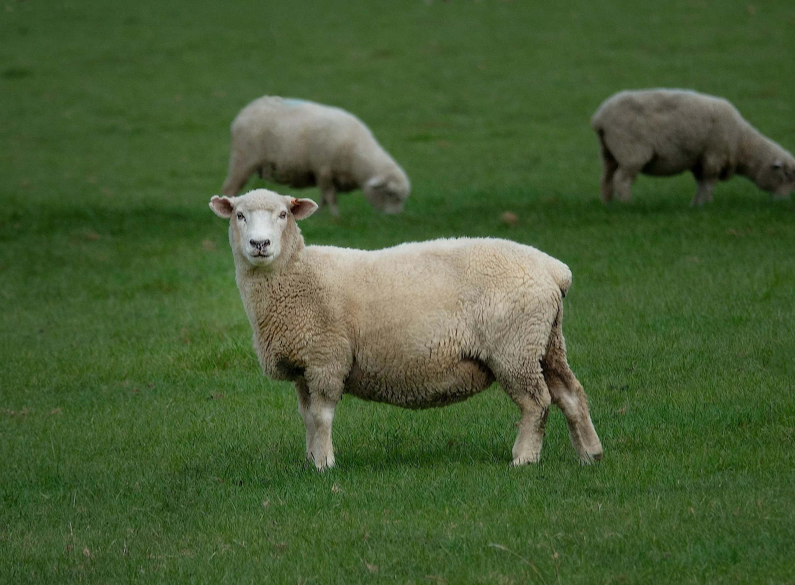

Asesoría rápida
Responde unas preguntas rápidas y recibe una recomendación inicial según especie, etapa y objetivo.
Alimentos balanceados, fichas técnicas oficiales y asesoría para elegir la mejor opción según especie, etapa y objetivo.
Elige el animal que buscas, revisa las opciones disponibles y cotiza directo por WhatsApp. Si no estás seguro, el asesor inteligente te orienta en segundos.
Atención directa
Consulta por WhatsApp
Información técnica
Fichas y presentaciones
Productores y mascotas
Catálogo por especie
Elige la especie de forma visual. Esta sigue siendo la entrada principal al catálogo porque es la manera más rápida e intuitiva para el cliente.

Opciones para crecimiento, desarrollo y engorda; consulta recomendación según etapa.
Entrar al catálogo
Opciones para crecimiento, desarrollo y engorda; consulta recomendación según etapa.
Entrar al catálogo
Nutrición balanceada para rebaños sanos. Concentrados ricos en minerales para máximo desarrollo.
Entrar al catálogo
Fórmulas de alto rendimiento para producción lechera, engorda y rápido desarrollo de becerros.
Entrar al catálogoEscribe una especie, etapa, producto o necesidad y encuentra más rápido una opción para revisar o cotizar.
Responde tres preguntas y recibe una ruta sugerida al instante. Después puedes enviar tu caso por WhatsApp con los datos ya preparados.
En abatez acompañamos a productores y clientes con soluciones de nutrición animal, información técnica descargable y atención directa para elegir el alimento más conveniente según especie, etapa y objetivo.
Recomendaciones prácticas según cada necesidad
Encuentra opciones por especie, revisa información técnica útil y contacta al equipo para confirmar precio, presentación y disponibilidad.
Responde unas preguntas rápidas y recibe una recomendación inicial según especie, etapa y objetivo.
Consulta uso recomendado, beneficios, análisis garantizado y ficha técnica cuando esté disponible.
Solicita precio, presentación, disponibilidad y forma de entrega por WhatsApp de manera directa.
Espacio para fotografías autorizadas, experiencias de clientes y resultados de campo.
Sí, contamos con rutas logísticas programadas para abastecer de manera directa a ranchos, granjas y distribuidores en Teziutlán, Xiutetelco y toda la zona perimetral del estado de Puebla y Veracruz. Coordinamos las entregas para garantizar que el alimento llegue fresco.
Ofrecemos precios altamente competitivos desde la compra de un solo bulto en planta. Sin embargo, para activar tarifas especiales de mayoreo o distribución por tonelada, nuestro equipo comercial puede estructurar una cotización personalizada de acuerdo con el volumen de tu consumo regular.
Por supuesto. Además de nuestras líneas estándar de alto rendimiento, nuestro departamento de nutrición animal está capacitado para analizar las necesidades de tu granja y diseñar o maquilar mezclas personalizadas que resuelvan deficiencias específicas en tus fases de producción.
Comparte especie, cantidad o necesidad. El mensaje se envía directo por WhatsApp para confirmar precio, presentación y disponibilidad.
Lun a vie: 9:00 a.m. - 6:00 p.m. · Sáb: 9:00 a.m. - 2:00 p.m.